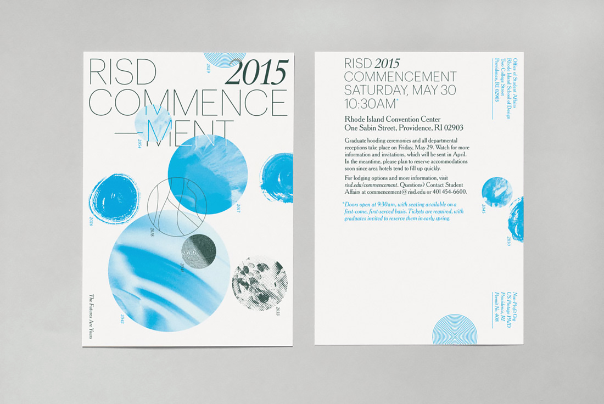
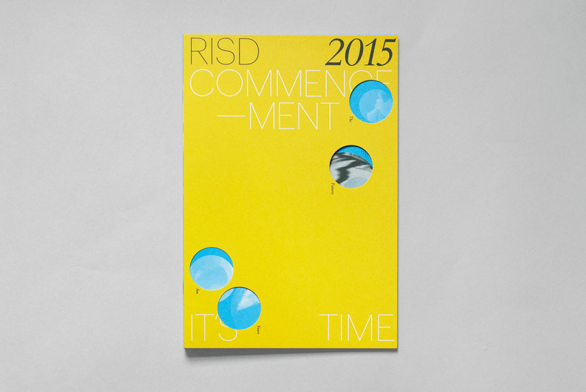
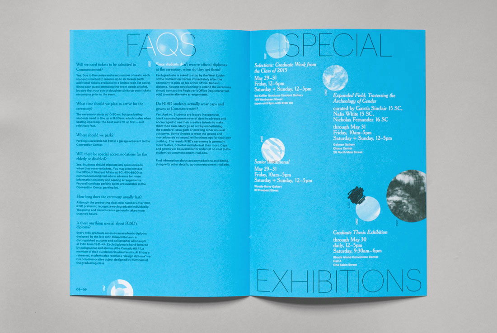
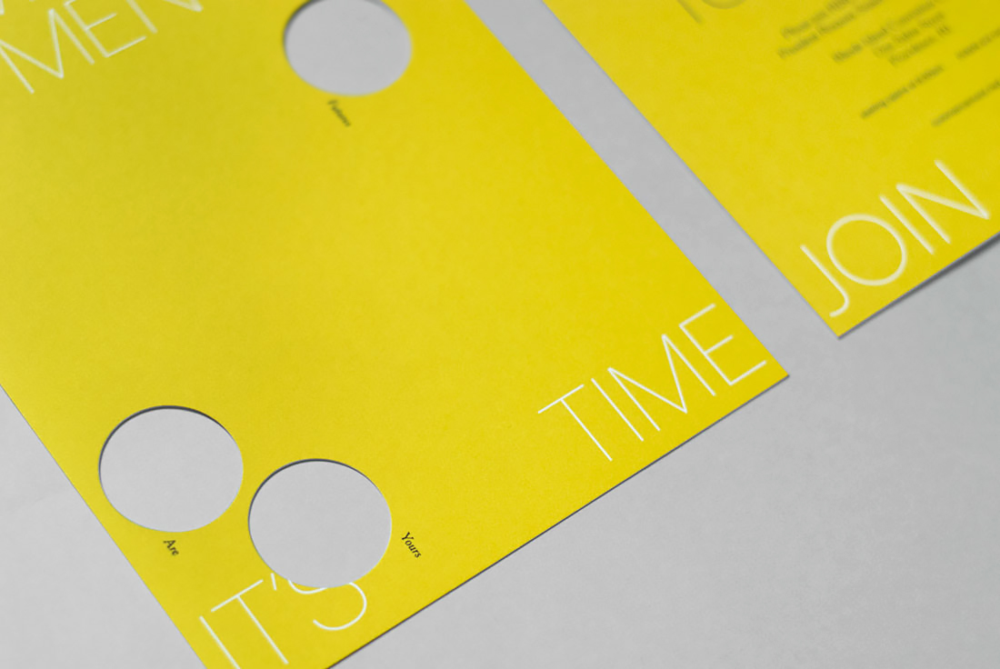
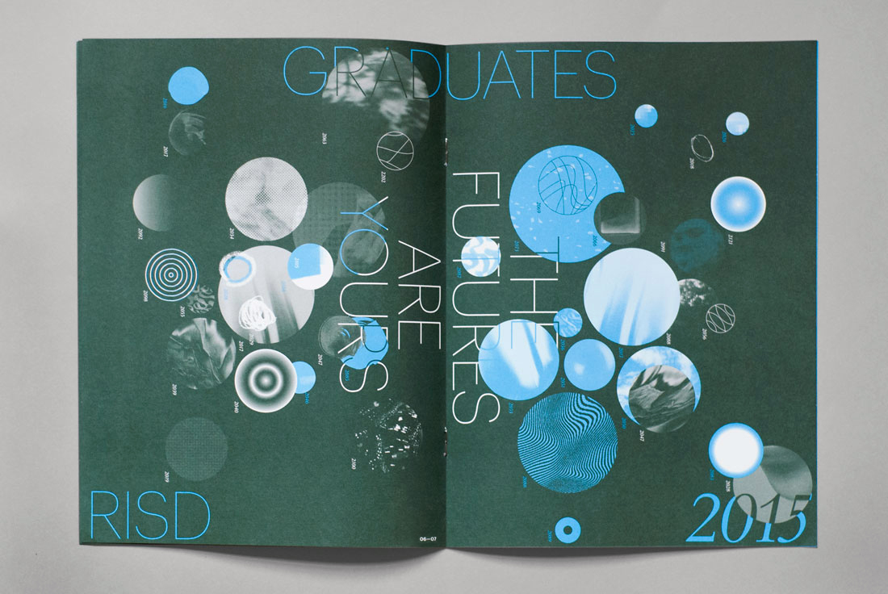
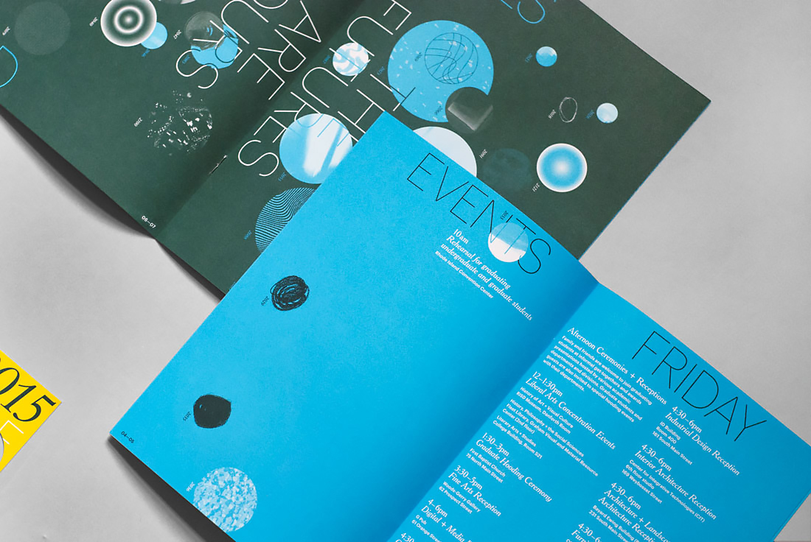
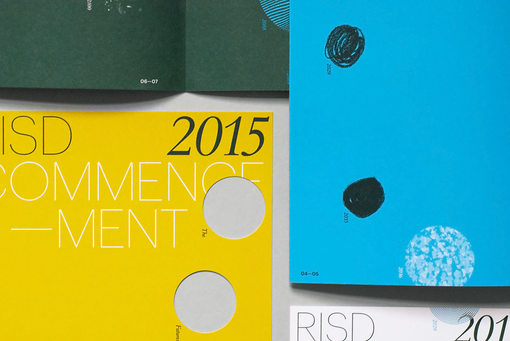
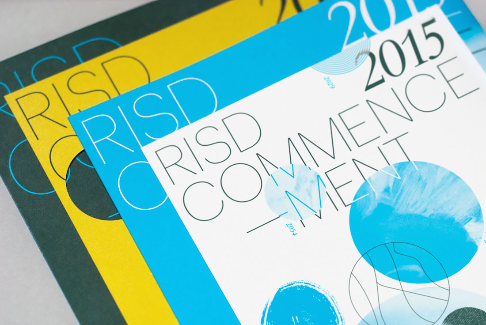

RISD Commencement 2015
Save the date card, invite (die cut), booklet, program (all offset)
Various sizes
2015
Rather than avoiding all of the cliches that surround graduation, I engaged one by visualizing possible futures as abstracted portals (together they also read like swatches, or a palette). In lieu of the enthusiastic Seussian vision for post-grad life, I propose a more refined, malleable possibility—the singular future as plural. The futures are yours. The printed pieces themselves became larger, darker, and more complex over time, eventually culminating in the program's chaotic and celebratory center spread.
Client
RISD Media
Website and signage (not pictured) designed by RISD Media.




